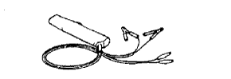
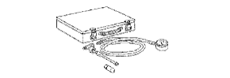
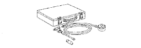

Engine Mechanical (2AZ-FE) Preparation [Function Inspection]
 | 09843-18040 | Diagnosis Check Wire No.2 |
 | 09961-01270 | Torque Wrench Adapter |
 | 09991-70200 | TaSCAN Set |
 | KTL-12C | Timing Light (Current Detection Type) Supplied by Banzai Ltd. |
 | TBGCG-100 | Gasoline Compression Gauge Set Supplied by Banzai Ltd. |
 | TIGCG-100 | Gasoline Compression Gauge Set Supplied by Iyasaka Co., Ltd. |
 | TL-12C | Timing Light (Current Detection Type) Supplied by Iyasaka Co., Ltd. |
| CO/HC Meter |